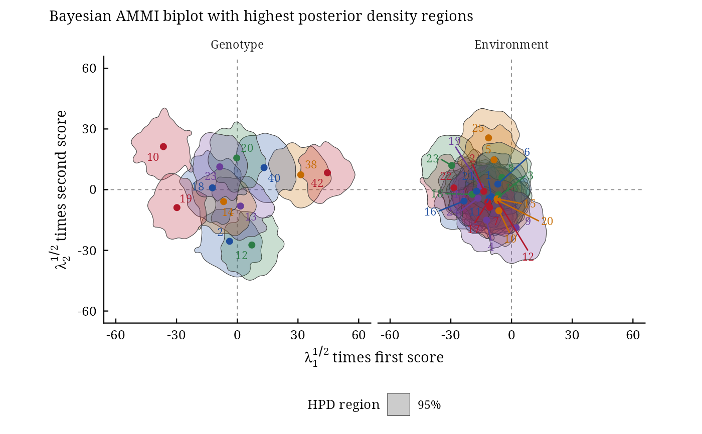

bayes_gge() fits the sites regression (SREG) model behind the GGE biplot by the method of Perez-Elizalde et
al. (2012): it is bayes_ammi(.model = "SREG"), under the name used by the package
bayesstability. The genotype main effect is part of the multiplicative terms; an earlier trial enters as
prior through .prior_data.
Usage
bayes_gge(
.data,
.y,
.gen,
.env,
.rep,
.nIter = 1000L,
.prior_data = NULL,
.n0 = NULL,
.k = NULL,
.burnin = 0L,
.thin = 1L,
.chains = 1L,
.priors = bys_priors(),
.level = 0.95,
.seed = NULL,
.align = TRUE,
.waic = TRUE
)
# Default S3 method
bayes_gge(
.data,
.y,
.gen,
.env,
.rep,
.nIter = 1000L,
.prior_data = NULL,
.n0 = NULL,
.k = NULL,
.burnin = 0L,
.thin = 1L,
.chains = 1L,
.priors = bys_priors(),
.level = 0.95,
.seed = NULL,
.align = TRUE,
.waic = TRUE
)Arguments
- .data
a data frame with one row per plot.
- .y, .gen, .env, .rep
the columns of the response, genotypes, environments and replicates: bare names or strings. The same names are used in
.prior_data.- .nIter
number of iterations kept per chain before thinning (after the burn-in).
- .prior_data
NULL(default: vague priors) or a data frame of an earlier trial with the same columns, genotypes and environments, used as prior (Perez-Elizalde et al. 2012).- .n0
weight of the earlier trial: the number of its observations per cell in the prior (default its number of replicates).
- .k
number of bilinear terms \(K\) (default
NULL: all of them).- .burnin
number of iterations discarded at the start of every chain (default 0).
- .thin
keep every
.thin-th iteration (default 1).- .chains
number of chains (default 1).
- .priors
the vague priors used without an earlier trial, from
bys_priors().- .level
probability of the HPD intervals (default 0.95).
- .seed
integer seed for a reproducible run, or
NULL; the random number state of the session is restored afterwards.- .align
keep the sign of every bilinear term (default
TRUE).- .waic
compute WAIC during sampling (default
TRUE).
Value
An object of class c("bys_bayes_ammi", "bys_result", "list"); see bayes_ammi().
References
Perez-Elizalde, S., Jarquin, D. and Crossa, J. (2012). A general Bayesian estimation method of linear-bilinear models applied to plant breeding trials with genotype x environment interaction. Journal of Agricultural, Biological, and Environmental Statistics, 17(1), 15–37. doi:10.1007/s13253-011-0063-9
Author
Muhammad Yaseen (myaseen208@gmail.com)
Examples
data(cultivo2008)
data(cultivo2009)
fg <-
bayes_gge(
.data = cultivo2009
, .y = y
, .gen = entry
, .env = site
, .rep = rep
, .nIter = 400
, .prior_data = cultivo2008
, .n0 = NULL
, .k = 2
, .burnin = 100
, .thin = 1
, .chains = 1
, .priors = bys_priors(
mu_mean = 0
, mu_var = 1e+8
, tau_mean = 0
, tau_var = 1e+8
, delta_mean = 0
, delta_var = 1e+8
, lambda_mean = 0
, lambda_var = 1e+8
, nu = 1
, s2 = NULL
)
, .level = 0.95
, .seed = 1
, .align = TRUE
, .waic = TRUE
)
fg
#> Bayesian SREG with 2 multiplicative term(s), an earlier trial as prior (n0 = 3): 12 genotypes, 25 environments, 3 replicates
#> 1 chain(s) x 400 kept draws (iterations 400 after a burn-in of 100, thinning 1); 0.3 s
#>
#> Posterior means, standard deviations and 95% HPD intervals
#> parameter mean sd lower upper ess
#> <char> <num> <num> <num> <num> <num>
#> 1: mu 3849.45 29.76 3787.60 3902.00 400
#> 2: sigma2 1690978.83 100810.22 1503446.43 1884445.42 400
#> 3: delta[1] 121.19 149.04 -166.23 408.42 400
#> 4: delta[2] -524.26 149.61 -815.78 -232.48 400
#> 5: delta[3] 871.36 146.84 593.90 1142.31 533
#> 6: delta[4] -373.87 151.40 -634.37 -59.13 468
#> 7: delta[5] 1537.40 154.45 1225.81 1817.17 322
#> 8: delta[6] -109.83 153.05 -407.29 158.38 340
#> 9: delta[7] -1758.98 147.78 -2038.72 -1457.79 400
#> 10: delta[8] 347.82 153.03 62.58 634.26 636
#> 11: delta[9] -1459.37 147.87 -1733.45 -1176.00 400
#> 12: delta[10] -729.16 150.74 -1015.43 -448.90 400
#> 13: delta[11] -1207.60 144.31 -1452.51 -893.79 400
#> 14: delta[12] -1902.59 158.57 -2226.59 -1616.13 400
#> 15: delta[13] -979.97 151.20 -1241.10 -670.88 400
#> 16: delta[14] -556.64 144.37 -833.95 -270.73 400
#> 17: delta[15] -2207.20 147.11 -2510.07 -1944.10 400
#> 18: delta[16] 82.43 146.95 -238.97 340.44 400
#> 19: delta[17] 165.15 152.31 -173.94 420.68 400
#> 20: delta[18] 1850.87 146.37 1580.34 2147.34 400
#> 21: delta[19] -864.01 153.32 -1154.53 -584.65 400
#> 22: delta[20] -1110.67 150.46 -1387.43 -798.98 400
#> 23: delta[21] -1627.47 160.34 -1913.66 -1313.32 473
#> 24: delta[22] 4923.60 157.91 4618.56 5201.61 400
#> 25: delta[23] 2869.84 147.19 2604.91 3156.31 469
#> 26: delta[24] 890.82 153.09 632.45 1206.48 400
#> 27: delta[25] 1751.14 161.16 1397.08 2024.66 400
#> 28: lambda[1] 6160.30 547.69 5158.97 7316.11 300
#> 29: lambda[2] 3222.78 603.55 1997.93 4251.27 339
#> parameter mean sd lower upper ess
#> <char> <num> <num> <num> <num> <num>
#>
#> Scores of the bilinear terms: x$summary (blocks alpha, gamma); biplot coordinates: x$scores
#>
#> Sources: Perez-Elizalde et al. (2012); Crossa et al. (2011); Yan et al. (2000);
#> Hoff (2009); Spiegelhalter et al. (2002); Watanabe (2010). Full references:
#> bys_cite(x).
bp <-
bayes_gge_biplot(
fit = fg
, burnin = 0
, thin = 1
, pb = 0.05
, plot_stable = TRUE
, plot_unstable = TRUE
, ncolors = 5
, .which = "both"
, .grid = 100
)
bp$biplot
